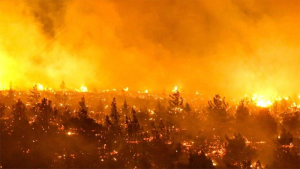
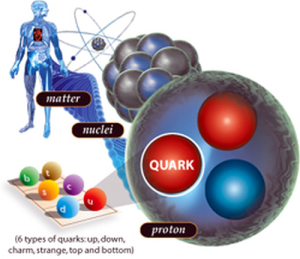
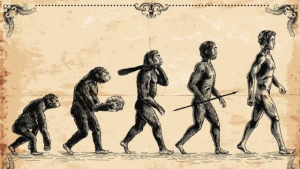
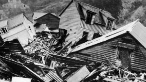
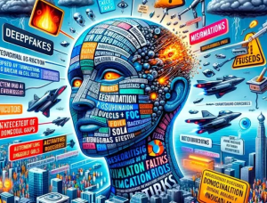

¿Will humanity be extinct before a thousand years?
¿WHAT DOES OUR ESSAY CONTAIN? An exhaustive and complete analysis of the most formidable risk factors, that can lead to the eventual collapse of the human species on this planet, given the natural dangers, or those caused by humans themselves, and also those that have arisen from various morbidities that have severely affected human health in recent times, in the light of the latest scientific findings.
In our essay we have captured a vast and heterogeneous list of very sensitive and traumatic issues
for the future of humanity, among which we cite some:
Subjects covered in our book:
Simulated universes
We are a temporary cosmic anomaly
Search for new planetary settlements
Global warming and climate change
Imminence of nuclear war
Fresh water disappears in much of the world
Lethal viruses
Hurricanes and typhoons
Hunger in the world
You will find more information on all these topics in our book,
¿will humanity be extinct before a thousand years?
Get our book
Presentación
¿QUÉ CONTIENE NUESTRO ENSAYO? Un exhaustivo y completo análisis, a la angustiosa premonición sobre los más formidables factores de riesgo, que pueden conducir al eventual colapso de la especie humana en este planeta, dados los peligros de origen natural, o aquellos provocados por el mismo ser humano, y también los que han surgido por variadas morbilidades, que han incidido severamente en la salud humana en los últimos tiempos, a la luz de los más recientes hallazgos científicos.
En nuestro ensayo hemos plasmado una vasta y heterogénea lista de temas muy sensibles y traumáticos para el futuro de la humanidad, para lo cual lo invitamos querido visitante a que descargue nuestro libro...
Nótese que nuestro libro también se encuentra disponible en idioma inglés en estas mismas plataformas.

Cosmología, principio antrópico, ajustes finos, el universo holográfico, las extrañas teorías
que nuestro universo sería una simulación computarizada, y la extraña naturaleza cuántica de la vida
Desde un punto de vista cosmológico, el carácter
holográfico del universo, el principio antrópico, los ajustes finos que posibilitaron
la formación de este universo y sus sistemas estelares, la extraña naturaleza cuántica
de la vida, y su formación bajo la óptica del modelo cuántico, una disertación en
relación con las extrañas teorías que afirman que el universo tiene naturaleza
cuántica y además que podría ser pixelado.
De ser ésto cierto, muy probablemente este universo sería una simulación computarizada, y como consecuencia, la vida como la conocemos no sería real...
De ser ésto cierto, muy probablemente este universo sería una simulación computarizada, y como consecuencia, la vida como la conocemos no sería real...
Peligros formidables que pueden matar la humanidad
Megaextinciones masivas prehistóricas.
Amenazas de asteroides y cometas.
Invasiones extraterrestres.
Gases de efecto invernadero.
Calentamiento global y oleadas de calor.
El cambio climático y repercusiones.
Guerras mundiales, genocidios, y riesgos de guerra nuclear.
Enfermedades catastróficas.
Pandemias letales.

Orígenes y roles de los humanos en este planeta, amenazas y retos.
La genómica prehistórica.
Quiénes somos los humanos y cuál es el rol que cumplimos en esta tierra.
Sobrepoblación humana.
Soberanía y seguridad alimentaria. Amenazas y retos.
Pobreza multidimensional y ODS de las Naciones Unidas.
Depredación del planeta tierra
Agotamiento de los recursos naturales planetarios.
Pérdida planetaria del agua dulce o potable.
Contaminación de los mares del mundo.
El desmantelamiento de la selva del Amazonas.
Derretimiento de los polos y del permafrost.

Formidables amenazas bajo nuestros pies. Grandes megaterremotos.
Hundimiento de la corteza terrestre.
Los peligros de la geología planetaria activa. Los terremotos planetarios más catastróficos. .

La estupidez humana, las redes sociales y la IA: sus amenazas y oportunidades, y
el imperativo por una economía incluyente
Características perniciosas y de personalidad de los individuos.
Impacto de las redes sociales en las sociedades modernas.
Necesidad de un nuevo modelo de economía incluyente.
Economías sin dinero físico: dinero virtual y/o electrónico.
Nota: Las imágenes utilizadas en este sitio han sido descargadas de Google imágenes.